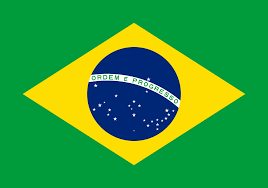

1-0



Neymar da Silva Santos Júnior, known as Neymar, is a Brazilian professional footballer who plays as a forward for Ligue 1 club Paris Saint-Germain and the Brazil national team.

Lionel Andrés Messi is an Argentine professional footballer who plays as a forward and captains the Argentina national team. He is currently a free agent, having played all his professional career for La Liga club Barcelona.

Cristiano Ronaldo dos Santos Aveiro GOIH ComM is a Portuguese professional footballer who plays as a forward for Serie A club Juventus and captains the Portugal national team.

Paulo Exequiel Dybala is an Argentine professional footballer who plays as a forward for Serie A club Juventus and the Argentina national team.

Mesut Özil is a German professional footballer who plays as an attacking midfielder for Süper Lig club Fenerbahçe. Nicknamed "The Assist King", Özil is known for his technical skills.

Mauro Emanuel Icardi is an Argentine professional footballer who plays as a striker for Ligue 1 club Paris Saint-Germain and the Argentina national team.

Ángel Fabián Di María is an Argentine professional footballer who plays for Ligue 1 club Paris Saint-Germain and the Argentina national team. He can play as either a winger or attacking midfielder.

Kylian Mbappé Lottin is a French professional footballer who plays as a forward for Ligue 1 club Paris Saint-Germain and the France national team. Mbappé began .

Mohamed Salah Hamed Mahrous Ghaly is an Egyptian professional footballer who plays as a forward for Premier League club Liverpool and captains the Egypt national team.

Harry Edward Kane MBE is an English professional footballer who plays as a striker for Premier League club Tottenham Hotspur and captains the England national team.

Kevin De Bruyne is a Belgian professional footballer who plays as a midfielder for Premier League club Manchester City, where he is vice-captain, and the Belgium national team.

Philippe Coutinho Correia is a Brazilian professional footballer who plays as an attacking midfielder or winger for Spanish club Barcelona and the Brazil national team.